DANE PUNKTOWE
Po tym rozdziale potrafisz:
- wyjaśnić, na jakie pytanie odpowiada analiza rozkładu przestrzennego danych punktowych,
- wskazać trzy grupy metod tej analizy i metody należące do każdej z nich,
- sformułować hipotezę zerową przyjmowaną w tej analizie,
- odróżnić dane punktowe oznakowane od nieoznakowanych.
Rozumiesz i umiesz zinterpretować:
- średnią centralną, medianę centralną, odległość standardową i elipsę odchylenia standardowego,
- średnią intensywność, wynik testu zliczania w kwadratach i mapę gęstości jądra,
- statystyki najbliższego sąsiada oraz wskaźnik Clarka-Evansa,
- przebieg funkcji G i funkcji K Ripleya względem obwiedni,
- dlaczego efekt brzegowy zawyża odległości mierzone przy granicy obszaru badań.
Część praktyczna: 3 Statystyki centrograficzne, 4 Metody oparte na analizie intensywności, 5 Metody oparte na odległości. Słownik pojęć: Załącznik D — Słownik pojęć. Funkcje: Załącznik B — Funkcje.
Wprowadzenie
Analiza rozkładu przestrzennego danych punktowych odpowiada na pytanie, w jaki sposób obiekty lub zdarzenia są rozmieszczone w przestrzeni. Materiałem wejściowym są same lokalizacje — współrzędne miejsc, w których coś się wydarzyło albo coś się znajduje.
Klasycznym przykładem jest epidemia cholery w londyńskiej dzielnicy Soho w 1854 roku. John Snow naniósł na plan dzielnicy miejsca zgonów oraz położenie publicznych pomp wodnych.
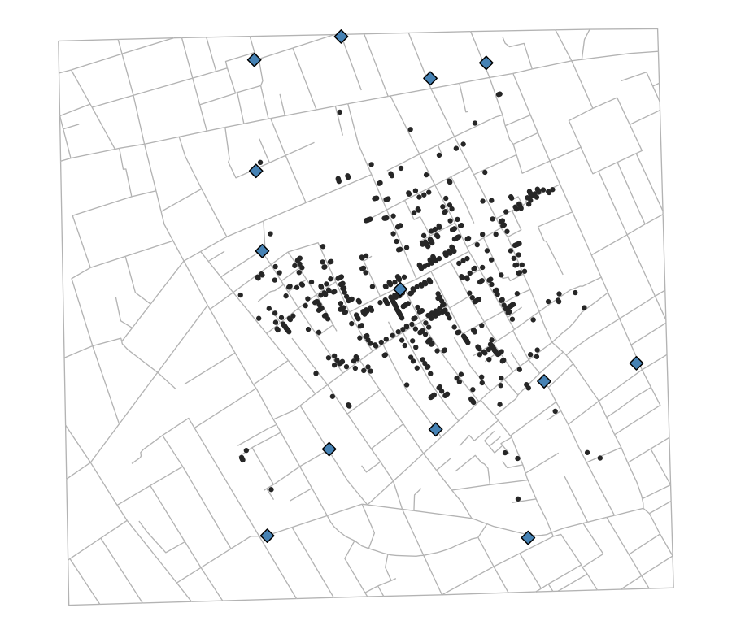
HistData.Na mapie widać, że zgony nie są rozłożone równomiernie: skupiają się wokół jednej z pomp, podczas gdy w otoczeniu pozostałych jest ich niewiele. Rozmieszczenie zdarzeń nie wygląda więc na przypadkowe — a to wskazuje, że działa na nie jakiś czynnik. Analiza rozkładu punktów opisuje takie odstępstwo liczbowo i pozwala sprawdzić, czy jest ono większe od tego, co daje sam przypadek.
Pytanie, dlaczego rozmieszczenie jest takie, a nie inne, wymaga odniesienia lokalizacji zdarzeń do innych zmiennych — czym zajmują się metody opisane w kolejnych częściach skryptu.
Statystyka punktów
Statystyka punktów to dział statystyki przestrzennej zajmujący się rozmieszczeniem zdarzeń w przestrzeni. Od pozostałych działów odróżnia ją to, czym jest dana wejściowa: nie wartość zmierzona w punkcie ani wartość zagregowana w jednostce przestrzennej, lecz sama lokalizacja zdarzenia. Zbiór takich lokalizacji nazywany jest wzorcem punktowym, a pytanie badawcze dotyczy jego struktury — czy zdarzenia rozkładają się równomiernie, czy tworzą skupiska.
Zadania statystyki punktów dzielą się na dwa:
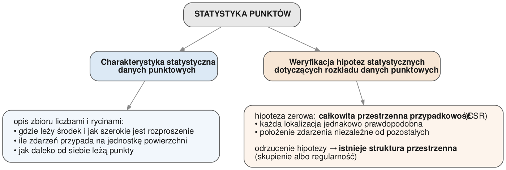
Charakterystyka statystyczna opisuje zbiór punktów liczbami i rycinami: wskazuje jego środek i rozproszenie, podaje liczbę zdarzeń przypadającą na jednostkę powierzchni, pokazuje, jak daleko od siebie leżą punkty. Jest odpowiednikiem statystyk opisowych w statystyce klasycznej, z tą różnicą, że opisuje położenie, a nie wartość zmiennej.
Weryfikacja hipotez rozstrzyga, czy zaobserwowany obraz różni się od tego, co dałby czysty przypadek. Hipotezą zerową jest całkowita przestrzenna przypadkowość (opisana w następnej sekcji), a jej odrzucenie oznacza, że w danych istnieje struktura przestrzenna. Bez tego kroku charakterystyka statystyczna pozostaje samym opisem: pokazuje, jak zbiór wygląda, ale nie rozstrzyga, czy jego wygląd wymaga wyjaśnienia.
Wszystkie ryciny ilustrujące metody obliczono na danych z mapy Snowa: 250 adresów, pod którymi odnotowano zgony na cholerę, na fragmencie Soho o wymiarach około 496 × 448 m (powierzchnia 222 138 m²). Dane są w układzie współrzędnych wyrażonym w metrach, więc wszystkie odległości podane niżej to metry.
Pojęcia podstawowe
Punkt, zdarzenie i znak
Punkt (ang. point) to lokalizacja opisana parą współrzędnych. Zdarzenie (ang. event) to obiekt lub zjawisko, którego lokalizację zarejestrowano — zgon, przestępstwo, drzewo, szkoła. Dodatkowa cecha przypisana zdarzeniu nazywana jest znakiem (ang. mark); w terminologii systemów informacji geograficznej odpowiada mu atrybut.
Dane oznakowane i nieoznakowane
Rozróżnienie między lokalizacją a znakiem dzieli zbiory danych punktowych na dwie grupy:
- dane punktowe nieoznakowane (ang. unmarked spatial point pattern data) — same lokalizacje, bez atrybutów,
- dane punktowe oznakowane (ang. marked spatial point pattern data) — lokalizacje wraz z wartością przypisaną każdemu zdarzeniu, na przykład liczbą zgonów pod danym adresem albo średnicą drzewa.
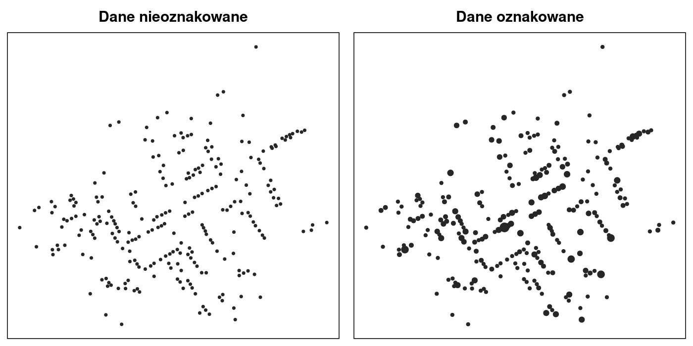
Obie mapy pokazują te same 250 lokalizacji, ale odpowiadają na inne pytania. Lewa mówi, gdzie odnotowano zgony; prawa — gdzie było ich najwięcej. Metody opisane w tym rozdziale analizują wyłącznie lokalizacje, więc stosuje się je do danych nieoznakowanych. Wszystkie zbiory używane w części praktycznej są nieoznakowane. Jeśli dane mają atrybut, a pytanie dotyczy jego wartości, właściwe są metody z pozostałych części skryptu.
Obszar badań i okno analizy
Zbiór punktów zawsze leży wewnątrz jakiegoś obszaru, a wynik wielu metod zależy od tego, jak ten obszar wyznaczono. Granica obszaru badań nosi nazwę okna analizy (ang. window). W pakiecie spatstat, używanym w części praktycznej, wzorzec punktowy jest obiektem klasy ppp (ang. planar point pattern) i zawiera zarówno współrzędne punktów, jak i okno analizy.
Typy rozkładu punktów
Rozmieszczenie punktów opisuje się na skali od rozproszenia do skupienia:
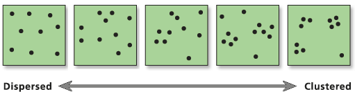
Wyróżnia się trzy typy rozkładu, a każdy z nich mówi coś innego o procesie, który doprowadził do powstania zbioru:
- losowy — na rozmieszczenie nie działa żaden czynnik albo działa wiele czynników, których wpływy wzajemnie się znoszą,
- regularny — punkty rozmieszczone równomiernie; zwykle efekt świadomego działania, a nie procesu naturalnego,
- skupiony — występują skupiska (klastry) punktów, co wskazuje, że na rozmieszczenie wpływa jakiś czynnik.
Całkowita przestrzenna przypadkowość
Punktem odniesienia dla wszystkich metod tej części jest całkowita przestrzenna przypadkowość (ang. complete spatial randomness, CSR). Jest to model, w którym każda lokalizacja w obszarze badań jest jednakowo prawdopodobna, a położenie każdego zdarzenia nie zależy od położenia pozostałych (Moraga 2023).
Całkowita przestrzenna przypadkowość jest hipotezą zerową analizy rozkładu punktów. Jej odrzucenie oznacza, że w danych istnieje struktura przestrzenna — skupienie albo regularność. Samo odrzucenie hipotezy nie wskazuje jednak przyczyny tej struktury.
Efekt brzegowy
Punkt leżący blisko granicy obszaru badań może mieć swojego faktycznego najbliższego sąsiada poza tym obszarem. Sąsiad ten nie został zarejestrowany, więc zapisana odległość jest zawyżona. Zjawisko to nosi nazwę efektu brzegowego (ang. edge effect) i dotyczy wszystkich metod opartych na odległości.
Funkcje pakietu spatstat udostępniają korekty brzegowe, które to obciążenie zmniejszają; wybór korekty jest decyzją analityka i pokazany jest na liczbach w 5 Metody oparte na odległości. Efekt brzegowy jest jednym z trzech zagrożeń, przed którymi ostrzega literatura przedmiotu — obok niewłaściwego wyznaczenia okna analizy i stosowania opisywanych metod do wzorców próbkowanych, czyli takich, w których zarejestrowano tylko część zdarzeń (Páez i Boisjoly, b.d.).
Trzy grupy metod
Metody analizy rozkładu punktów dzielą się na trzy grupy. Każda opisuje rozmieszczenie w inny sposób i żadna nie zastępuje pozostałych.
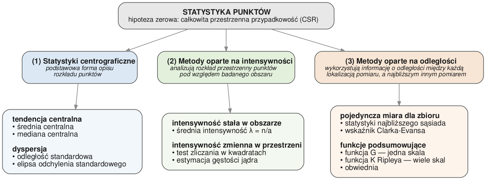
Statystyki centrograficzne podsumowują zbiór jako całość: podają jego środek i miarę rozproszenia. Metody oparte na intensywności odnoszą liczbę punktów do powierzchni obszaru badań. Metody oparte na odległości pomijają obszar i pracują na odległościach między samymi punktami.
Statystyki centrograficzne
Statystyki centrograficzne są przestrzennymi statystykami opisowymi — stanowią modyfikację statystyk opisowych znanych ze statystyki klasycznej i są podstawową formą opisu rozkładu przestrzennego danych punktowych. Dzielą się na dwie podgrupy:
- statystyki tendencji centralnej — wyznaczają punkt, wokół którego skoncentrowane są lokalizacje badanego zjawiska,
- statystyki dyspersji — określają, jak daleko od tego punktu rozproszone są pozostałe punkty.
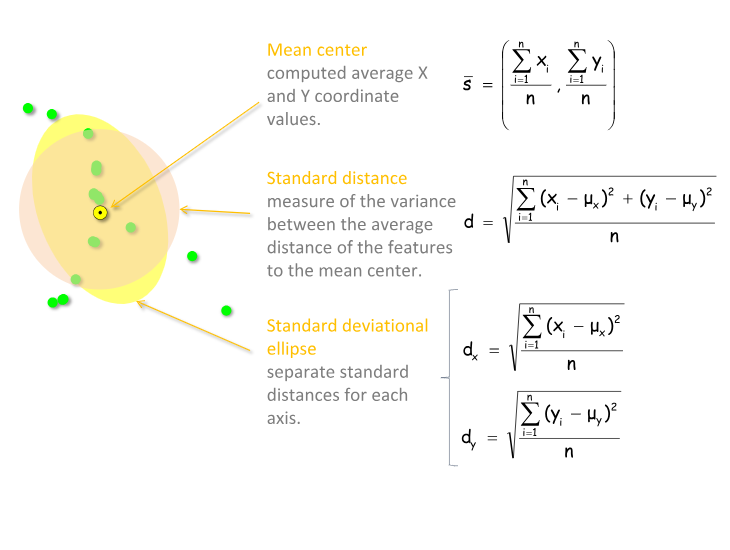
Średnia centralna
Średnia centralna (ang. mean center) to punkt o współrzędnych będących średnimi arytmetycznymi współrzędnych wszystkich punktów zbioru:
\[\overline{x_c} = \frac{\sum_{i=1}^{n} x_i}{n} \qquad \overline{y_c} = \frac{\sum_{i=1}^{n} y_i}{n}\]
gdzie \(x_i\) i \(y_i\) to współrzędne \(i\)-tego punktu, a \(n\) — liczba punktów w zbiorze.
Jest to jedna z najczęściej stosowanych miar centrograficznych. Podobnie jak średnia arytmetyczna w statystyce klasycznej, jest silnie zależna od lokalizacji punktów skrajnych: pojedynczy punkt położony daleko od pozostałych przesuwa ją w swoją stronę.
Mediana centralna
Mediana centralna (ang. median center) to punkt o współrzędnych będących medianami współrzędnych, wyznaczanymi osobno dla każdej osi:
\[\widetilde{x_c} = \mathrm{med}(x_1, \ldots, x_n) \qquad \widetilde{y_c} = \mathrm{med}(y_1, \ldots, y_n)\]
Mediana centralna jest odporna na wartości skrajne: pojedynczy punkt położony bardzo daleko od pozostałych przesuwa średnią centralną, a mediany centralnej praktycznie nie zmienia. Porównanie położenia obu środków jest prostym sprawdzeniem, czy średnia centralna nie została zaburzona przez nietypowe lokalizacje.
Tak zdefiniowana mediana centralna nie jest punktem minimalizującym sumę odległości do wszystkich punktów zbioru, nazywanym medianą geometryczną albo środkiem minimalnej odległości. Ten drugi punkt nie ma rozwiązania w postaci wzoru i wyznacza się go iteracyjnie. Część podręczników używa nazwy „mediana centralna” właśnie w tym drugim znaczeniu, dlatego przed interpretacją wyniku sprawdź, co liczy używana funkcja.
Odległość standardowa
Odległość standardowa (ang. standard distance) to absolutna miara rozproszenia punktów w przestrzeni. Określa średnią odległość punktów od średniej centralnej i obliczana jest jako średnia kwadratowa tych odległości:
\[d = \sqrt{\frac{\sum_{i=1}^{n} d_{ic}^2}{n}} \qquad \text{gdzie} \qquad d_{ic}^2 = (x_i - \overline{x_c})^2 + (y_i - \overline{y_c})^2\]
Symbol \(d_{ic}\) oznacza odległość \(i\)-tego punktu od średniej centralnej.
Odległość standardowa jest odpowiednikiem odchylenia standardowego w statystyce klasycznej. Wyrażona jest w jednostkach układu współrzędnych, więc dla danych w układzie odwzorowanym — w metrach. Graficznie przedstawia się ją jako okrąg o środku w średniej centralnej i promieniu równym odległości standardowej.
Elipsa odchylenia standardowego
Elipsa odchylenia standardowego (ang. standard deviational ellipse) pozwala określić kierunki rozrzutu punktów w przestrzeni. Opisują ją trzy parametry:
- \(s_x\), \(s_y\) — długości dwóch prostopadłych półosi elipsy,
- \(\theta\) — kąt obrotu elipsy, czyli kierunek, w którym punkty są najbardziej rozproszone.
Odległość standardowa podaje jedną liczbę opisującą rozproszenie we wszystkich kierunkach jednocześnie, a elipsa rozdziela je na dwa kierunki prostopadłe. Stosunek dłuższej półosi do krótszej mówi, jak silnie rozkład jest wydłużony: wartość bliska 1 oznacza rozproszenie jednakowe we wszystkich kierunkach.
Przykład: cztery statystyki dla zgonów w Soho
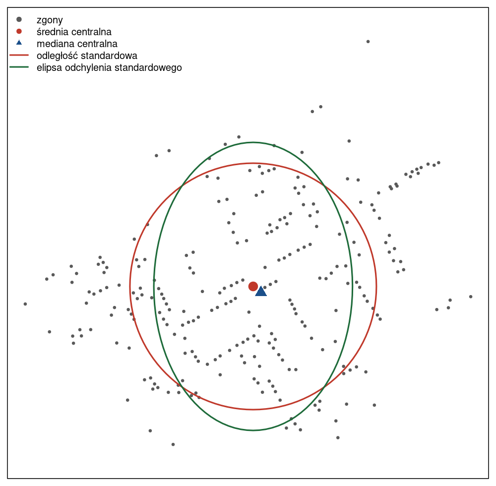
Dla tego zbioru:
- średnia centralna i mediana centralna leżą 11 m od siebie — bardzo blisko jak na obszar o rozmiarach ok. 500 × 450 m. Oznacza to, że w zbiorze nie ma pojedynczych adresów położonych tak daleko od pozostałych, by przesunąć średnią;
- odległość standardowa wynosi 137 m — tyle wynosi przeciętne oddalenie adresu od środka zbioru. Sama ta liczba niewiele mówi; nabiera znaczenia w porównaniu z innym zbiorem albo innym okresem;
- półosie elipsy wynoszą 111 m i 160 m, a ich stosunek 1,45 oznacza rozkład umiarkowanie wydłużony. Kąt obrotu \(\theta\) = 66,5° wskazuje kierunek największego rozproszenia.
Zakres wniosków
Statystyki centrograficzne opisują zbiór punktów jako całość i nie rozstrzygają, czy rozkład jest losowy, regularny czy skupiony. Pojedyncza wartość odległości standardowej nic nie znaczy bez punktu odniesienia — nabiera znaczenia dopiero w porównaniu z innym zbiorem danych albo z innym okresem. Typ rozkładu rozstrzygają metody oparte na odległości.
Punkty leżą zawsze wewnątrz jakiegoś obszaru, a jeśli obszar ten jest wydłużony, to każdy rozkład punktów w jego wnętrzu — również całkowicie losowy — da wydłużoną elipsę. Zanim uznasz kierunek elipsy za właściwość badanego zjawiska, porównaj go z kierunkiem samego obszaru analizy. Przykład liczbowy zawiera 3 Statystyki centrograficzne.
Metody oparte na intensywności
Metody oparte na intensywności analizują rozkład przestrzenny punktów pod względem badanego obszaru. Stosowane są między innymi w epidemiologii i kryminologii, gdzie pytanie brzmi, czy natężenie obserwowanych zjawisk jest w obszarze jednorodne, czy zmienia się w przestrzeni.
Średnia intensywność
Jeśli przyjmuje się, że intensywność zdarzeń jest stała w całym obszarze, opisuje ją jedna liczba — średnia intensywność, czyli liczba zdarzeń przypadająca na jednostkę powierzchni:
\[\lambda = \frac{n}{a}\]
gdzie \(n\) to liczba zdarzeń, a \(a\) — powierzchnia obszaru badań.
Dla zbioru z Soho \(n\) = 250, a powierzchnia analizowanego fragmentu wynosi 222 138 m², więc \(\lambda\) = 0,001125 zdarzenia na metr kwadratowy, czyli 11,25 adresu ze zgonem na hektar.
Wartość ta zależy od tego, jaki obszar uznano za obszar badań. Gdyby zamiast całego fragmentu dzielnicy wziąć sam kwartał wokół skupienia zgonów, powierzchnia byłaby kilkakrotnie mniejsza, a intensywność odpowiednio większa — przy tych samych punktach.
Test zliczania w kwadratach
Założenie o stałej intensywności sprawdza test zliczania w kwadratach (ang. quadrat count test). Przebiega w trzech krokach:
- podział obszaru badań na równe kwadraty,
- zliczenie punktów w każdym kwadracie,
- porównanie zliczeń z wartościami oczekiwanymi, czyli z sytuacją, w której w każdym kwadracie jest ta sama liczba punktów.
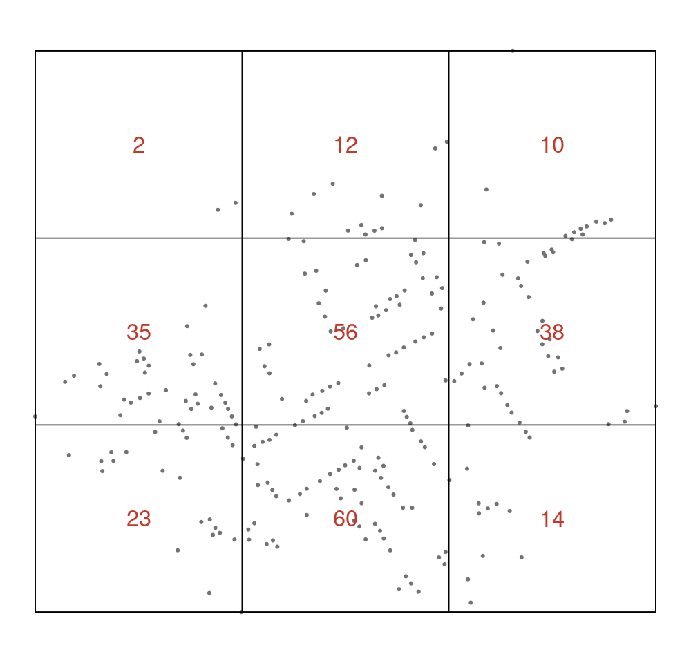
Przy 250 punktach i 9 oczkach wartość oczekiwana wynosi 27,8 punktu na oczko. Zliczenia rzeczywiste wahają się od 2 do 60: w górnym rzędzie jest ich 2, 12 i 10, a w środkowym i dolnym — od 14 do 60. Już sam ten rozrzut sugeruje, że intensywność nie jest stała.
Statystykę testową oblicza się jako sumę po wszystkich oczkach (Gimond, b.d.; Páez i Boisjoly, b.d.):
\[X^2 = \sum_{i=1}^{m} \frac{(O_i - E_i)^2}{E_i}\]
gdzie \(O_i\) to zliczenie obserwowane w oczku \(i\), \(E_i\) — zliczenie oczekiwane, a \(m\) — liczba oczek. Statystykę porównuje się z rozkładem \(\chi^2\) o \(m - 1\) stopniach swobody. Warunkiem stosowalności testu jest wartość oczekiwana większa od 5 w każdym oczku; przy drobniejszej siatce warunek ten przestaje być spełniony i wtedy stosuje się wariant oparty na symulacji Monte Carlo.
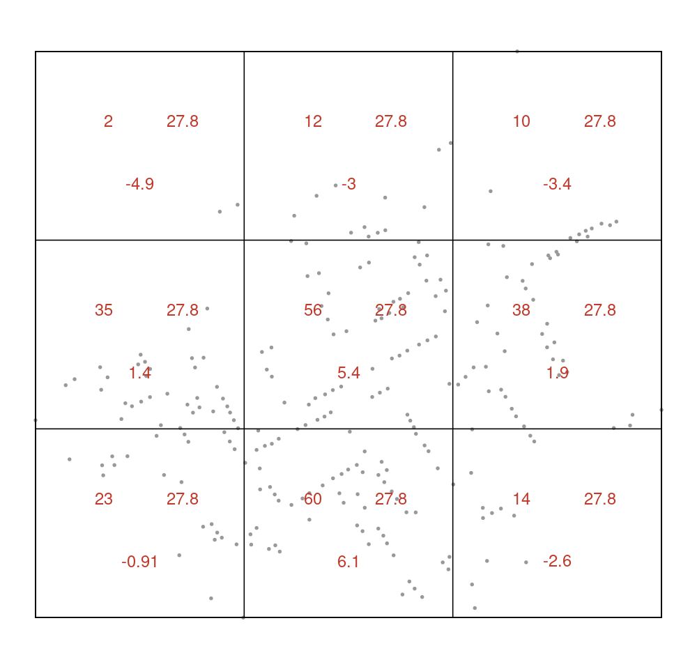
Trzy liczby w każdym oczku oznaczają kolejno:
- lewa górna — zliczenie obserwowane \(O_i\), czyli liczba punktów, które faktycznie wpadły do tego oczka,
- prawa górna — zliczenie oczekiwane \(E_i\), to samo dla wszystkich oczek i równe \(n/m\) = 250/9 = 27,8,
- dolna — residuum Pearsona, czyli \((O_i - E_i)/\sqrt{E_i}\). Pokazuje, o ile odchyleń standardowych zliczenie w tym oczku odbiega od oczekiwanego. Wartość dodatnia oznacza więcej punktów, niż wynikałoby z jednorodnej intensywności, ujemna — mniej.
Residua pokazują, gdzie leży źródło odstępstwa: w dolnym środkowym oczku residuum wynosi 6,1 (60 punktów wobec 27,8 oczekiwanych), a w lewym górnym −4,9 (2 punkty wobec 27,8). Test chi-kwadrat daje dla tych danych \(X^2\) = 123,6 przy 8 stopniach swobody i \(p\) < 0,001, więc hipotezę o stałej intensywności odrzucamy: zdarzenia nie rozkładają się w obszarze równomiernie.
Wynik zależy od przyjętej liczby oczek. Ten sam zbiór podzielony na siatkę 2×2 i 4×4 może dać różne rozstrzygnięcia, ponieważ każda siatka opisuje zmienność na innej skali. Siatka zbyt drobna łamie przy tym warunek \(E_i > 5\).
Estymacja gęstości jądra
Estymacja gęstości jądra (ang. kernel density estimation, KDE) opisuje intensywność jako wielkość zmienną w przestrzeni. Metoda wykorzystuje ruchome okno do obliczenia lokalnej intensywności dla kolejnych podzbiorów badanego obszaru.
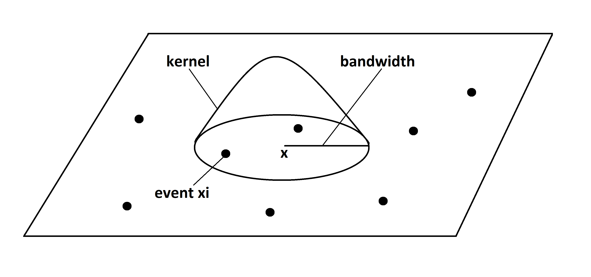
Ruchome okno definiuje się przez ustawienie parametrów jądra (ang. kernel) — jego kształtu oraz rozmiaru, nazywanego szerokością pasma (ang. bandwidth). Jądro nie tylko wyznacza kształt i rozmiar okna, lecz może także ważyć punkty według zadanej funkcji; często stosuje się w tej roli funkcję gaussowską.
Wynikiem jest siatka rastrowa, w której każde oczko ma przypisaną wartość intensywności obliczoną dla obszaru o wielkości ruchomego okna wyśrodkowanego na tym oczku. Rozdzielczość komórki wynikowej jest zawsze mniejsza niż rozmiar ruchomego okna.
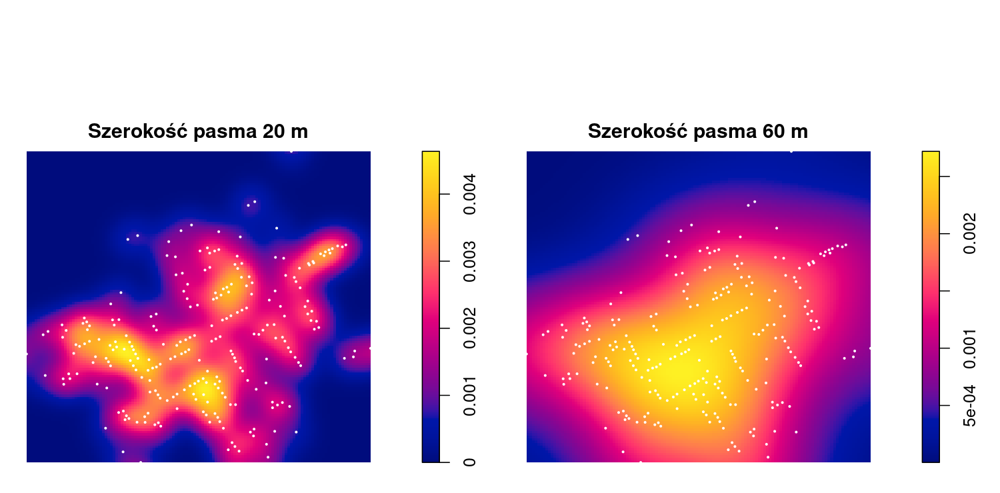
Obie mapy przedstawiają ten sam zbiór. Przy paśmie 20 m widać kilkanaście osobnych ognisk odpowiadających pojedynczym ulicom i kwartałom. Przy paśmie 60 m obraz jest wygładzony i zostaje jedno wyraźne maksimum w środkowo-południowej części obszaru. Szerokość pasma nie wynika z danych — wybiera ją analityk, a wybór rozstrzyga, czy na mapie zobaczy się wiele małych skupień, czy jedno duże.
Zakres wniosków
Żadne z trzech założeń — zasięg obszaru badań, liczba kwadratów, szerokość pasma — nie wynika z danych. Wybiera je analityk i musi podać je razem z wynikiem.
Metody oparte na odległości
Metody oparte na odległości wykorzystują informację o odległości między każdą lokalizacją pomiaru lub obserwacji a najbliższym innym pomiarem lub obserwacją. W odróżnieniu od metod opartych na intensywności nie wymagają dzielenia obszaru na fragmenty, więc ich wynik nie zależy od wyboru siatki ani szerokości pasma.
Statystyki najbliższego sąsiada
Podstawą jest wektor odległości od każdego punktu do jego najbliższego sąsiada. Wektor ten podsumowuje się tak jak każdą inną zmienną ilościową — wartością minimalną i maksymalną, średnią, medianą i kwantylami — oraz przedstawia na histogramie.
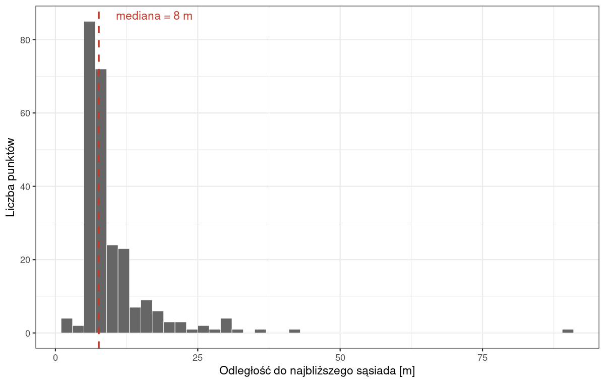
Dla tego zbioru odległości wynoszą od 2 m do 90 m, mediana to 8 m, a średnia 10 m. Odczyt mediany mówi, że połowa adresów ma innego adresu ze zgonem nie dalej niż 8 metrów. Histogram jest wyraźnie prawostronnie asymetryczny: zdecydowana większość odległości mieści się poniżej 20 m, a pojedyncze adresy są oddalone o kilkadziesiąt metrów. Rozbieżność między medianą (8 m) a średnią (10 m) sygnalizuje właśnie te nieliczne izolowane lokalizacje.
Wskaźnik Clarka-Evansa
Wskaźnik Clarka-Evansa (Clark i Evans 1954) to stosunek rzeczywistej średniej odległości od najbliższego sąsiada do odległości oczekiwanej przy rozmieszczeniu losowym. Jest jedną liczbą opisującą cały zbiór:
- \(R < 1\) — punkty leżą bliżej siebie, niż wynikałoby z rozmieszczenia losowego, co wskazuje na występowanie skupień,
- \(R = 1\) — rozmieszczenie losowe,
- \(R > 1\) — rozmieszczenie bardziej regularne; dla regularnej siatki heksagonalnej wskaźnik przyjmuje wartość 2,15.
Dla zgonów w Soho wskaźnik wynosi 0,675 bez korekty brzegowej i 0,629 z korektą cdf — w obu przypadkach wyraźnie mniej niż 1: adresy leżą bliżej siebie, niż wynikałoby z rozmieszczenia losowego. Jest to ta sama informacja, którą daje test zliczania w kwadratach, ale uzyskana bez dzielenia obszaru na oczka. Korekta brzegowa jest decyzją analityka i w części praktycznej podajemy ją jawnie (5 Metody oparte na odległości).
Funkcje podsumowujące
Funkcje podsumowujące (ang. summary functions) porównują wartości empiryczne, obliczone na podstawie danych, z wartościami teoretycznymi wynikającymi z rozmieszczenia losowego — i robią to w funkcji odległości, a nie dla jednej liczby.
Funkcja G podsumowuje rozkład odległości do najbliższego sąsiada w postaci dystrybuanty (ang. cumulative distribution function). Wartość \(G(r)\) to udział punktów, których najbliższy sąsiad leży nie dalej niż \(r\). Funkcja G patrzy wyłącznie na najbliższego sąsiada, więc operuje tylko w jednej skali. Porównanie krzywej empirycznej \(G_{emp}\) z teoretyczną \(G_t\) czyta się następująco:
- \(G_{emp} > G_t\) — punkty zlokalizowane bliżej, niż to wynika z rozkładu losowego, co może wskazywać na istnienie klastrów,
- \(G_{emp} < G_t\) — punkty zlokalizowane dalej, niż to wynika z rozkładu losowego, co może wskazywać na rozkład regularny lub rozproszony.
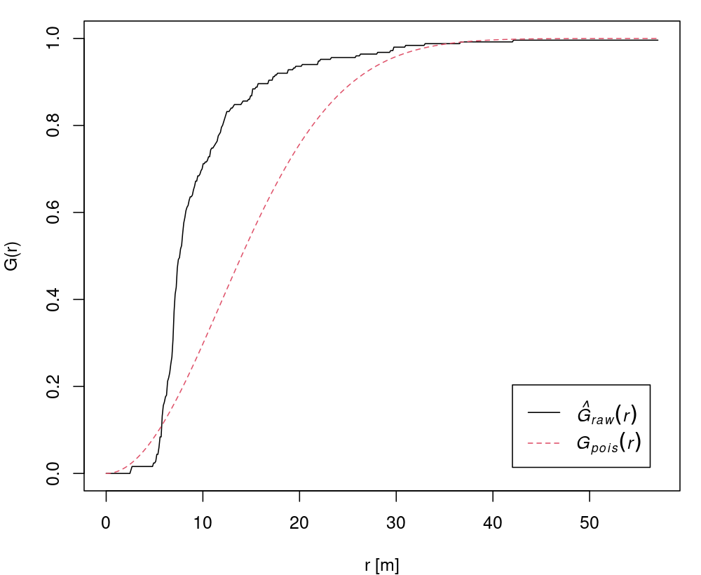
Krzywa empiryczna biegnie powyżej teoretycznej na zakresie od około 6 do 37 m: przy \(r\) = 10 m sąsiada w promieniu 10 m ma 71% adresów, podczas gdy przy rozmieszczeniu losowym byłoby ich 30%. Odczyt ten wskazuje na skupienie punktów. Powyżej 37 m obie krzywe zbiegają się do jedynki, bo na takiej odległości każdy adres ma już jakiegoś sąsiada.
Przebieg funkcji G wygląda inaczej dla każdego z czterech typów próbkowania opisanych wyżej:
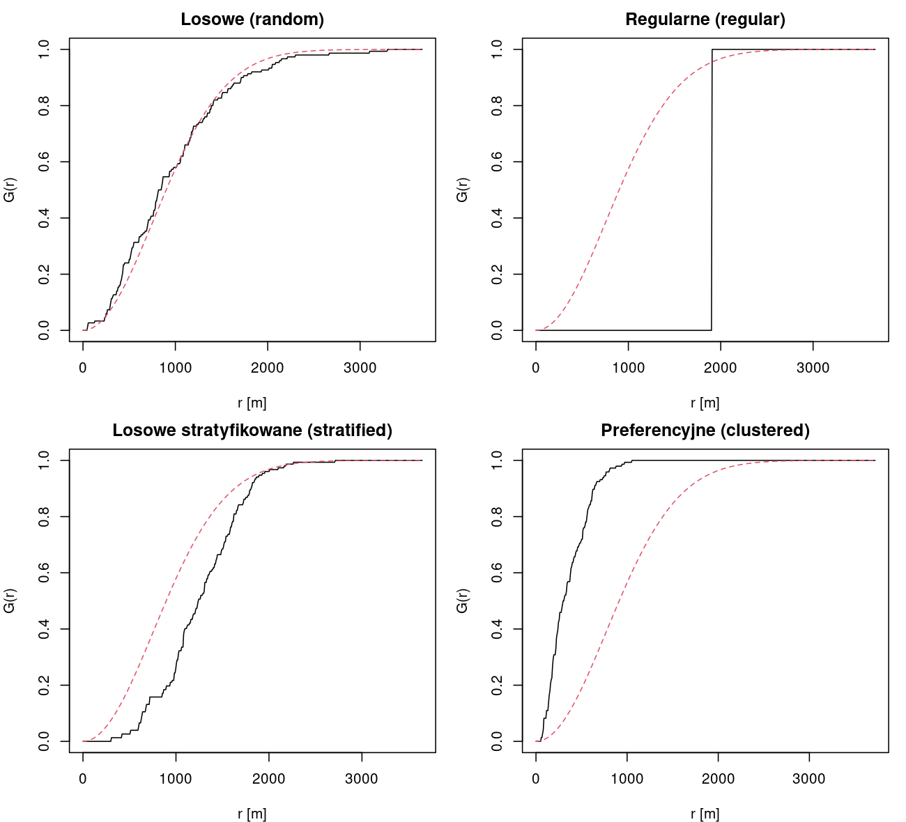
Wskaźniki Clarka-Evansa podane niżej policzono bez korekty brzegowej.
- Losowe — krzywa empiryczna biegnie blisko teoretycznej na całym zakresie; rozkład jest nieodróżnialny od losowego (wskaźnik Clarka-Evansa 1,00).
- Regularne — krzywa jest schodkiem: do 1900 m wynosi 0, a potem skacze do 1. Wszystkie punkty mają najbliższego sąsiada w dokładnie tej samej odległości 1900 m, bo leżą w węzłach siatki. Do tego progu krzywa leży poniżej teoretycznej, czyli punkty są od siebie dalej, niż wynikałoby z losowania (wskaźnik 1,98).
- Losowe stratyfikowane — krzywa leży poniżej teoretycznej, ale łagodnie: losowanie jednego punktu w każdej komórce siatki wymusza pewną regularność, słabszą niż przy próbkowaniu regularnym (wskaźnik 1,32).
- Preferencyjne — krzywa leży wyraźnie powyżej teoretycznej i osiąga 1 już około 1000 m; punkty leżą znacznie bliżej siebie, niż wynikałoby z losowania (wskaźnik 0,37).
Funkcja K Ripleya odpowiada na pokrewne pytanie przy innej definicji sąsiedztwa: zlicza wszystkie punkty leżące w otoczeniu o promieniu \(r\), nie tylko najbliższy. Dzięki temu analizuje wzorzec przestrzenny na wielu skalach jednocześnie. Interpretacja jest analogiczna: \(K_{emp} > K_t\) wskazuje na skupienie punktów, a \(K_{emp} < K_t\) — na ich rozrzut, czyli sytuację, w której punkty są otoczone przez mniejszą liczbę punktów, niż można by oczekiwać przy rozmieszczeniu losowym (Gimond, b.d.).
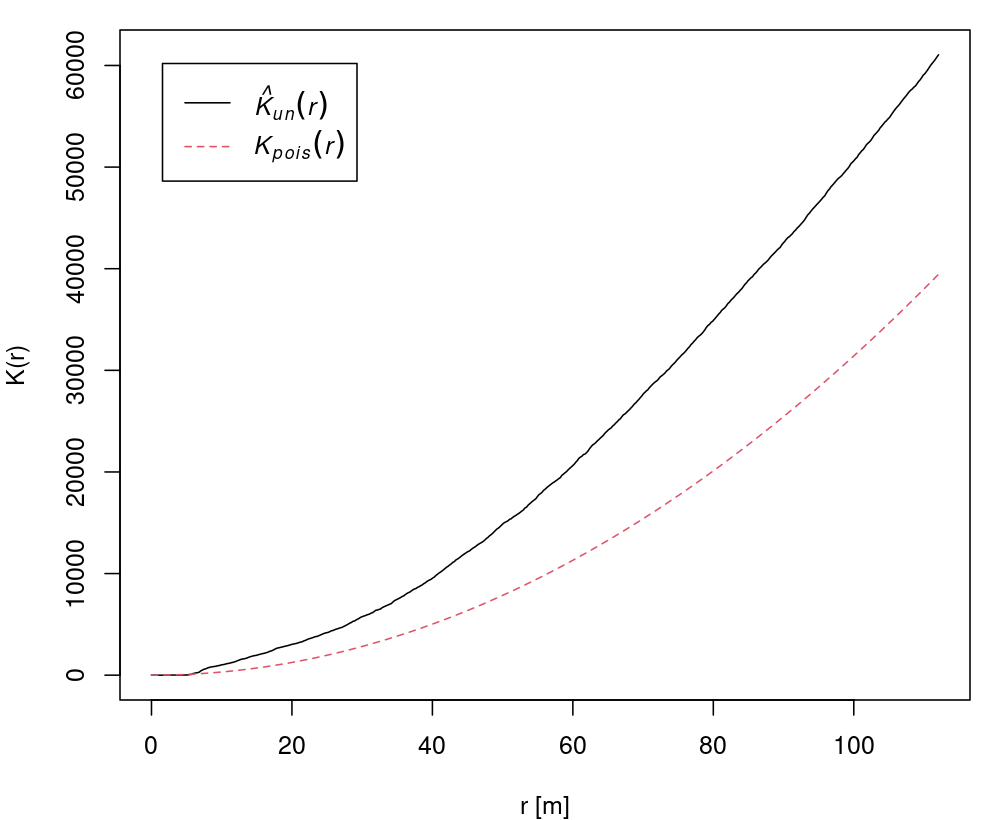
Krzywa empiryczna leży powyżej teoretycznej od około 6 m aż do końca zakresu (112 m), co prowadzi do tego samego wniosku co funkcja G — z tą różnicą, że dotyczy on nie tylko najbliższego otoczenia, ale całej skali kilkudziesięciu metrów. Funkcja G przestaje odróżniać rozkłady powyżej 37 m, bo tam osiąga już wartość 1; funkcja K opisuje strukturę dalej.
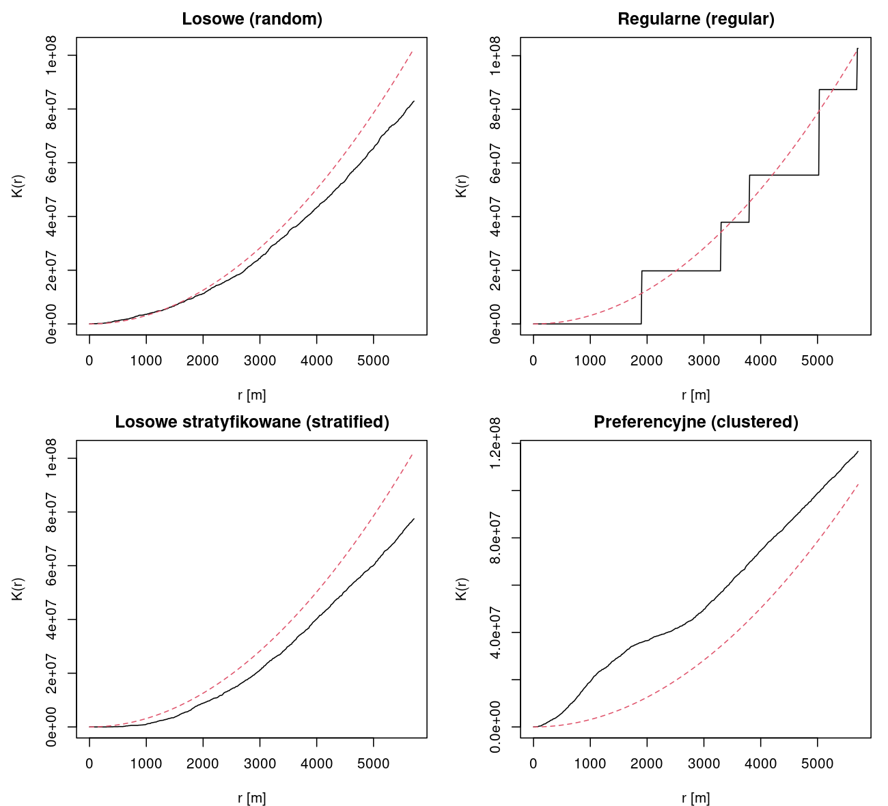
Odczyt jest zgodny z funkcją G, ale obejmuje szerszy zakres odległości. Dla próbkowania losowego krzywa empiryczna pokrywa się z teoretyczną na małych odległościach. Dla regularnego jest schodkowa i do około 2500 m leży poniżej teoretycznej. Dla losowego stratyfikowanego leży poniżej teoretycznej na całym zakresie. Dla preferencyjnego biegnie wyraźnie powyżej, i to już od najmniejszych odległości.
Powyższe krzywe policzono bez korekty brzegowej. Przy dużych promieniach otoczenie punktu wystaje poza okno analizy, więc zliczana jest tylko jego część i krzywa empiryczna jest zaniżona. Widać to na panelach „losowe” i „stratyfikowane”, gdzie krzywa oddala się od teoretycznej w prawej części wykresu. Wniosek o typie rozkładu wyciąga się więc z zakresu małych odległości względem rozmiaru obszaru albo stosuje korektę brzegową.
Obwiednia
Krzywa teoretyczna opisuje wartość przeciętną przy rozmieszczeniu losowym, a pojedyncza realizacja takiego rozmieszczenia od tej przeciętnej odbiega. Samo porównanie krzywej empirycznej z teoretyczną mówi więc, w którą stronę odbiega rozmieszczenie, ale nie rozstrzyga, czy odstępstwo jest większe od zwykłej zmienności losowania.
Rozstrzyga to obwiednia (ang. envelope). Buduje się ją przez symulację: generuje się wiele zbiorów punktów przy hipotezie zerowej o całkowitej przestrzennej przypadkowości, dla każdego z nich oblicza się funkcję G lub K, a z otrzymanego zbioru krzywych wyznacza się pas wartości. Pas ten jest obszarem nieodrzucania hipotezy zerowej, a wniosek odczytuje się z położenia krzywej empirycznej względem niego (Moraga 2023):
- krzywa wewnątrz obwiedni — rozkład nie różni się istotnie od losowego,
- krzywa powyżej obwiedni — rozkład istotnie skupiony,
- krzywa poniżej obwiedni — rozkład istotnie rozproszony.
Sposób budowy pasa rozstrzyga, jak wolno go czytać. Obwiednia jednoczesna ma stałą szerokość i pozwala ocenić całą krzywę naraz; jej poziom istotności wynosi \(\alpha = \texttt{nrank}/(1 + \texttt{nsim})\). Obwiednia punktowa, zwracana domyślnie, jest testem wyłącznie przy jednej, z góry ustalonej wartości \(r\) — szczegóły i konsekwencje odczytywania jej jako testu całej krzywej omawia 5 Metody oparte na odległości.
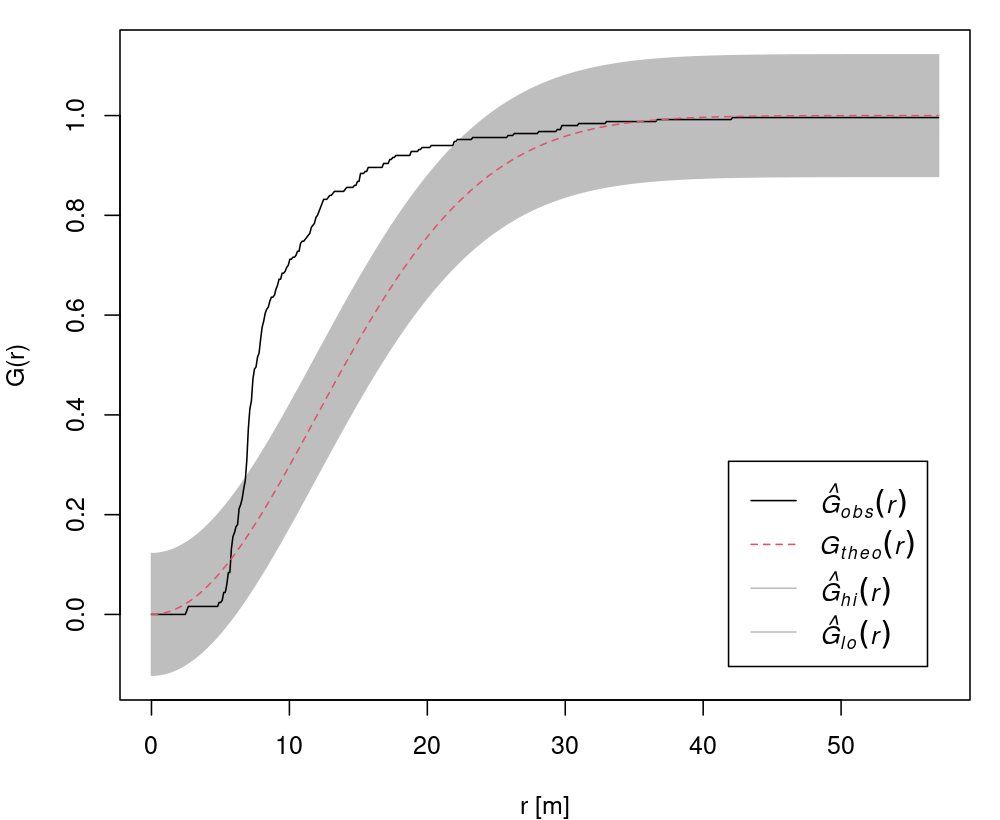
nrank = 5, czyli na poziomie istotności 0,05. Szary pas to obwiednia, linia ciągła — krzywa empiryczna, przerywana — teoretyczna.Krzywa empiryczna wychodzi ponad obwiednię. Rozkład zgonów jest więc istotnie skupiony: odstępstwo od rozmieszczenia losowego jest większe niż zmienność, jakiej można oczekiwać przy samym losowaniu. Wniosek jest przy tym binarny i dotyczy całej krzywej łącznie — obwiednia jednoczesna nie wskazuje, przy jakich odległościach odstępstwo występuje.
Każde uruchomienie symulacji daje nieco inny pas. Aby wynik był powtarzalny, przed obliczeniem obwiedni ustawia się ziarno generatora liczb losowych. Dwie osoby, które tego nie zrobią, otrzymają dwie różne obwiednie dla tych samych danych.
Zakres wniosków
Metody oparte na odległości rozstrzygają, czy i na jakiej odległości rozmieszczenie punktów odbiega od losowego. Nie wskazują natomiast, gdzie w obszarze badań leżą miejsca zagęszczone — to pytanie należy do metod opartych na intensywności.
Powiązanie z ćwiczeniami
| Grupa metod | Funkcje | Pakiet | Gdzie wykonujesz |
|---|---|---|---|
| statystyki centrograficzne | center_mean(), center_median(), std_distance(), std_dev_ellipse() |
sfdep |
3 Statystyki centrograficzne |
| przygotowanie wzorca punktowego | as.owin(), as.ppp(), rescale() |
spatstat |
4 Metody oparte na analizie intensywności |
| oparte na intensywności | quadratcount(), quadrat.test(), density() |
spatstat |
4 Metody oparte na analizie intensywności |
| oparte na odległości | nndist(), clarkevans(), clarkevans.test(), Gest(), Kest(), envelope() |
spatstat |
5 Metody oparte na odległości |
Opis pakietów wraz z odnośnikami do dokumentacji zawiera Załącznik A — Pakiety, a pełne zestawienie funkcji — Załącznik B — Funkcje.
Literatura
- Gimond (b.d.) — centrografia, metody oparte na intensywności i na odległości.
- Páez i Boisjoly (b.d.) — analiza wzorców punktowych, rozdziały 9–17: zliczanie w kwadratach, funkcje G i K, testowanie hipotez przy użyciu obwiedni, ograniczenia metod.
- Moraga (2023) — wzorce punktowe, całkowita przestrzenna przypadkowość, funkcje G i K.
- Lovelace, Nowosad, i Muenchow (2025) — praca z danymi przestrzennymi w R.
- Anselin (b.d.) — kurs wideo Spatial Cluster Analysis przygotowany przez Luca Anselina. Części dotyczące danych punktowych: wprowadzenie, pojęcie wzorca punktowego, intensywność i CSR, wizualizacja intensywności — gęstość jądra, metody oparte na odległości, funkcja K.
Pytania kontrolne
- Co jest celem metod stosowanych w ramach statystyki punktów?
Celem jest określenie, w jaki sposób obiekty lub zdarzenia są rozmieszczone w przestrzeni: losowo, regularnie czy w skupieniach. Zadania dzielą się na dwa: charakterystykę statystyczną zbioru punktów (środek, rozproszenie, intensywność, odległości) oraz weryfikację hipotez dotyczących rozkładu, czyli rozstrzygnięcie, czy zaobserwowany obraz różni się od tego, co dałby czysty przypadek.
- Wymień i krótko opisz trzy grupy metod stosowanych do analizy rozkładu danych punktowych. Podaj przykład metody z każdej grupy.
- Statystyki centrograficzne — przestrzenne statystyki opisowe; podsumowują zbiór jako całość. Przykłady: średnia centralna, mediana centralna, odległość standardowa, elipsa odchylenia standardowego.
- Metody oparte na intensywności — analizują rozkład punktów względem badanego obszaru. Przykłady: średnia intensywność, test zliczania w kwadratach, estymacja gęstości jądra.
- Metody oparte na odległości — wykorzystują odległości między punktami, bez dzielenia obszaru. Przykłady: statystyki najbliższego sąsiada, wskaźnik Clarka-Evansa, funkcja G, funkcja K Ripleya.
- Czym jest całkowita przestrzenna przypadkowość i co oznacza odrzucenie tej hipotezy?
To model, w którym każda lokalizacja w obszarze badań jest jednakowo prawdopodobna, a położenie każdego zdarzenia nie zależy od położenia pozostałych. Jest hipotezą zerową analizy rozkładu punktów. Jej odrzucenie oznacza, że w danych istnieje struktura przestrzenna — skupienie albo regularność — ale nie wskazuje przyczyny tej struktury.
- Czym różnią się dane punktowe oznakowane od nieoznakowanych i do których z nich stosuje się metody tej części skryptu?
Dane nieoznakowane to same lokalizacje, bez atrybutów. Dane oznakowane mają dodatkowo wartość przypisaną każdemu zdarzeniu — znak, czyli w terminologii systemów informacji geograficznej atrybut. Metody tej części analizują wyłącznie lokalizacje, więc stosuje się je do danych nieoznakowanych.
- Co to jest średnia centralna? Czym różni się od mediany centralnej i co oznacza wyraźna różnica w położeniu obu środków?
Średnia centralna to punkt o współrzędnych będących średnimi arytmetycznymi współrzędnych wszystkich punktów zbioru. Mediana centralna to punkt o współrzędnych będących medianami współrzędnych, liczonymi osobno dla każdej osi.
Średnia centralna jest wrażliwa na punkty skrajne — pojedynczy punkt położony daleko od pozostałych przesuwa ją w swoją stronę; mediana centralna na takie punkty jest odporna. Wyraźna różnica położenia obu środków wskazuje więc, że w zbiorze są lokalizacje odległe od reszty i że średnia centralna została przez nie zaburzona. Dla zgonów w Soho oba środki leżą 11 m od siebie przy obszarze o rozmiarach ok. 500 × 450 m, czyli takich lokalizacji nie ma.
- Co to jest odległość standardowa i w jakich jednostkach jest wyrażona?
To absolutna miara rozproszenia punktów: średnia kwadratowa odległości punktów od średniej centralnej, czyli odpowiednik odchylenia standardowego w statystyce klasycznej. Wyrażona jest w jednostkach układu współrzędnych — dla danych w układzie odwzorowanym w metrach. Graficznie przedstawia się ją jako okrąg o środku w średniej centralnej i promieniu równym tej odległości. Pojedyncza wartość nic nie znaczy bez punktu odniesienia: nabiera sensu w porównaniu z innym zbiorem albo innym okresem.
- Elipsa odchylenia standardowego wyszła wyraźnie wydłużona w kierunku północ–południe. Czy oznacza to, że badane zjawisko rozkłada się w tym kierunku?
Nie można tego stwierdzić bez porównania z kształtem obszaru badań. Punkty leżą zawsze wewnątrz jakiegoś obszaru, a jeśli obszar jest wydłużony południkowo, to każdy rozkład punktów w jego wnętrzu — również całkowicie losowy — da elipsę wydłużoną w tym samym kierunku. Kierunek elipsy wolno uznać za właściwość zjawiska dopiero wtedy, gdy różni się od kierunku obszaru analizy.
- Do czego służy test zliczania w kwadratach i jak interpretujemy jego wynik?
Sprawdza założenie o stałej intensywności zdarzeń w obszarze badań. Obszar dzieli się na równe kwadraty, zlicza punkty w każdym z nich i porównuje zliczenia z wartościami oczekiwanymi, czyli z sytuacją, w której w każdym kwadracie jest ta sama liczba punktów. Im większa rozbieżność, tym mniej prawdopodobne, że intensywność jest stała.
Statystyka testowa to \(X^2 = \sum (O_i - E_i)^2 / E_i\), porównywana z rozkładem \(\chi^2\) o \(m - 1\) stopniach swobody; warunkiem stosowalności jest wartość oczekiwana większa od 5 w każdym oczku. Dla zgonów w Soho przy siatce 3×3 wartość oczekiwana wynosi 27,8 punktu na oczko, a zliczenia wahają się od 2 do 60; test daje \(X^2\) = 123,6 przy 8 stopniach swobody i \(p\) < 0,001, więc hipotezę o stałej intensywności odrzucamy. Residua Pearsona wskazują, które oczka odpowiadają za odstępstwo. Wynik zależy od przyjętej liczby oczek — ta sama zbiorowość na siatce 2×2 i 4×4 może dać różne rozstrzygnięcia, bo każda siatka opisuje zmienność na innej skali.
- Na czym polega estymacja gęstości jądra i od czego zależy uzyskany obraz?
Metoda opisuje intensywność jako wielkość zmienną w przestrzeni. Ruchome okno, zdefiniowane kształtem i rozmiarem jądra, przesuwa się nad obszarem i dla każdego położenia oblicza lokalną intensywność. Wynikiem jest siatka rastrowa, w której każde oczko ma przypisaną wartość obliczoną dla obszaru o wielkości okna wyśrodkowanego na tym oczku.
Obraz zależy od szerokości pasma: pasmo wąskie daje powierzchnię rozdrobnioną, z osobnym maksimum przy niemal każdym skupieniu punktów, a pasmo szerokie — wygładzoną, na której zostają tylko największe zgrupowania. Dla zgonów w Soho pasmo 20 m daje kilkanaście ognisk, a pasmo 60 m — jedno wyraźne maksimum. Szerokość pasma nie wynika z danych; wybiera ją analityk.
- Co to jest funkcja G? Jak interpretuje się przebieg krzywej empirycznej względem teoretycznej?
Funkcja G podsumowuje rozkład odległości do najbliższego sąsiada w postaci dystrybuanty: \(G(r)\) to udział punktów, których najbliższy sąsiad leży nie dalej niż \(r\). Krzywa teoretyczna opisuje przebieg oczekiwany przy rozmieszczeniu losowym.
- \(G_{emp} > G_t\) — punkty leżą bliżej siebie, niż wynika z rozkładu losowego, co może wskazywać na istnienie klastrów,
- \(G_{emp} < G_t\) — punkty leżą dalej, co może wskazywać na rozkład regularny lub rozproszony.
Funkcja G patrzy wyłącznie na najbliższego sąsiada, więc operuje w jednej skali.
- Co to jest funkcja K Ripleya i czym różni się od funkcji G?
Różnicą jest definicja sąsiedztwa. Funkcja G patrzy wyłącznie na najbliższego sąsiada, więc operuje w jednej skali i opisuje strukturę na małych odległościach. Funkcja K zlicza wszystkie punkty leżące w otoczeniu o promieniu \(r\), więc uwzględnia także sąsiadów dalszych i opisuje strukturę na wielu skalach jednocześnie.
Interpretacja obu jest analogiczna: krzywa empiryczna powyżej teoretycznej wskazuje skupienie, poniżej — rozproszenie.
- W jaki sposób wykonuje się testowanie hipotezy dotyczącej rozkładu danych dla funkcji G oraz K Ripleya?
Przy użyciu obwiedni. Generuje się wiele zbiorów punktów przy hipotezie zerowej o całkowitej przestrzennej przypadkowości, dla każdego oblicza się funkcję G lub K, a z otrzymanego zbioru krzywych wyznacza się pas wartości — obszar nieodrzucania hipotezy zerowej. Wniosek odczytuje się z położenia krzywej empirycznej względem tego pasa.
Dla obwiedni jednoczesnej poziom istotności wynosi \(\alpha = \texttt{nrank}/(1 + \texttt{nsim})\) — przy 99 symulacjach i nrank = 5 daje to 0,05. Obwiednia punktowa jest testem tylko przy jednej, z góry ustalonej odległości (5 Metody oparte na odległości). Ponieważ jest to procedura losowa, przed obliczeniem obwiedni ustawia się ziarno generatora liczb losowych.
- Krzywa empiryczna funkcji G leży powyżej obwiedni. Jaki z tego wniosek?
Rozkład punktów jest istotnie skupiony. Obwiednia wyznacza obszar nieodrzucania hipotezy o całkowitej przestrzennej przypadkowości; krzywa leżąca powyżej niej oznacza, że punkty mają bliżej do najbliższego sąsiada, niż daje rozmieszczenie losowe, a odstępstwo jest większe od zwykłej zmienności losowania. Krzywa wewnątrz obwiedni oznaczałaby rozkład nieodróżnialny od losowego, a poniżej — rozkład istotnie rozproszony.
Zastrzeżenie: wniosek obwiedni jednoczesnej jest binarny i dotyczy całej krzywej łącznie. Odległości, na których krzywa wychodzi poza pas, nie są „skalą, na której pojawia się skupienie” — tego ten test nie rozstrzyga (5 Metody oparte na odległości).
- O czym informuje wskaźnik Clarka-Evansa i jak interpretuje się jego wartości? Co oznacza wartość 2,15?
Jest to stosunek rzeczywistej średniej odległości od najbliższego sąsiada do odległości oczekiwanej przy rozmieszczeniu losowym — jedna liczba opisująca cały zbiór:
- \(R < 1\) — punkty leżą bliżej siebie, niż wynikałoby z przypadku, czyli występują skupienia,
- \(R = 1\) — rozmieszczenie losowe,
- \(R > 1\) — rozmieszczenie bardziej regularne.
Wartość 2,15 odpowiada regularnej siatce heksagonalnej, czyli najbardziej regularnemu rozmieszczeniu punktów na płaszczyźnie. Dla zgonów w Soho wskaźnik wynosi 0,675 bez korekty brzegowej i 0,629 z korektą cdf, co w obu wariantach wskazuje na skupienie.
- Analiza rozkładu danych punktowych odpowiada na pytanie, jak zdarzenia są rozmieszczone w przestrzeni: losowo, regularnie czy w skupieniach. Dzieli się na charakterystykę statystyczną zbioru i weryfikację hipotez dotyczących rozkładu.
- Hipotezą zerową jest całkowita przestrzenna przypadkowość (CSR); jej odrzucenie oznacza istnienie struktury przestrzennej.
- Do statystyk centrograficznych należą: średnia centralna i mediana centralna (tendencja centralna) oraz odległość standardowa i elipsa odchylenia standardowego (dyspersja). Opisują zbiór jako całość i nie rozstrzygają typu rozkładu — służą do porównywania zbiorów.
- Do metod opartych na intensywności należą: średnia intensywność \(\lambda = n/a\), test zliczania w kwadratach i estymacja gęstości jądra. Opisują rozkład względem obszaru, więc każdy ich wynik zależy od założeń analityka: zasięgu obszaru, liczby kwadratów i szerokości pasma.
- Do metod opartych na odległości należą: statystyki najbliższego sąsiada, wskaźnik Clarka-Evansa oraz funkcje podsumowujące — funkcja G i funkcja K Ripleya, czytane wraz z obwiednią.
- Średnia centralna to średnia współrzędnych, mediana centralna — mediana współrzędnych liczona osobno dla każdej osi; odległość standardowa wyrażona jest w jednostkach układu współrzędnych, a kierunek elipsy odchylenia standardowego w dużej mierze odzwierciedla kształt obszaru badań.
- Funkcja G opisuje strukturę przez odległość do najbliższego sąsiada, więc działa w jednej skali; funkcja K zlicza wszystkie punkty w promieniu \(r\) i opisuje strukturę na wielu skalach. Krzywa empiryczna wewnątrz obwiedni oznacza rozkład nieodróżnialny od losowego, powyżej — istotne skupienie, poniżej — istotne rozproszenie.
- Wskaźnik Clarka-Evansa: \(R < 1\) skupienie, \(R = 1\) rozkład losowy, \(R > 1\) rozkład regularny (dla regularnej siatki heksagonalnej \(R = 2{,}15\)).